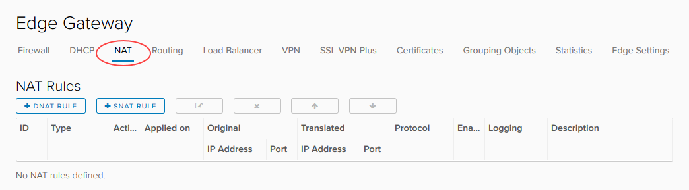

How to create NAT rules
Overview
Network Address Translation (NAT) allows the source or destination IP address to be changed to enable traffic to transition through a router or gateway.
You can use two types of NAT within your edge gateway:
Destination NAT (DNAT) - changes the destination IP of the packet
Source NAT (SNAT) - changes the source IP of the packet
For a virtual machine (VM) to access an external network resource from its virtual data centre (VDC), the IP address of its network needs to NAT to one of the following:
The public internet IP addresses provided by UKCloud
The private transit networks provided by UKCloud for PSN and HSCN connectivity
It's worth noting that for both DNAT and SNAT:
The NAT rule will be applied to the edge gateway, rather than to the internal VDC network
The firewall needs to be open for NAT rules
The steps for creating NAT rules vary depending on what type of edge gateway you're working with:
Note
We recommend that you convert your edge to an advanced gateway to access the latest vCloud Director functionality. For more information, see How to convert your edge to an advanced gateway.
Note
NAT rules only work if the firewall is enabled. For security reasons, you should ensure that the firewall is always enabled.
Creating NAT rules for an advanced gateway
Creating a DNAT rule for an advanced gateway
DNAT changes the destination IP address of a packet and performs the reverse function for any replies. You can use DNAT to publish a service located in a private network on a public IP address.
To create a DNAT rule on your advanced gateway:
In vCloud Director, access the edge gateway settings.
For more detailed instructions, see How to access edge gateway settings
Select the NAT tab.

Click + DNAT Rule.

In the Add DNAT Rule dialog box, from the Applied On list, select the interface on which to apply the rule.
Enter an Original IP/Range and a Translated IP/Range.
Select the Protocol, Original Port and Translated Port.
Make sure the Enabled toggle is selected and then click Keep.

Click Save changes.
Creating an SNAT rule for an advanced gateway
SNAT changes the source IP address of a packet and performs the reverse function for any replies.
When connecting to an external network, such as the internet, to access services (for example, DNS), you need to define an SNAT rule to translate your internal address into something available on the external network (for example, PSN, internet).
To create an SNAT rule on your advanced gateway:
In vCloud Director, access the edge gateway settings.
For more detailed instructions, see How to access edge gateway settings
Select the NAT tab.
Click + SNAT Rule.

In the Add SNAT Rule dialog box, from the Applied On list, select the interface on which to apply the rule.
Enter an Original Source IP/Range and a Translated Source IP/Range.
Make sure the Enabled toggle is selected and then click Keep.

Click Save changes.
Creating NAT rules for a standard edge
Note
You can only manage advanced gateways in the new vCloud Director 9.1 tenant portal. If you're working with a standard edge gateway, you must first switch to the vCloud Director web console to manage the edge. For more information, see How to switch to the vCloud Director web console from the tenant portal.
Creating a DNAT rule for a standard edge
DNAT changes the destination IP address of a packet and performs the reverse function for any replies. You can use DNAT to publish a service located in a private network on a public IP address.
To create a DNAT rule on your edge gateway:
In vCloud Director, click the Administration tab.

For more detailed instructions, see the Getting Started Guide for UKCloud for VMware
Double-click the virtual data centre (VDC) that you want to work with, or right-click the VDC and select Open.
Select the Edge Gateways tab.

Right-click the edge gateway and select Edge Gateway Services.
Select the NAT tab.

Click Add DNAT.

In the Add Destination NAT Rule dialog box, enter an Original (External) IP/range and a Translated (Internal) IP/range.
![TIP] You should have multiple external IP addresses to use. For how to find them, see How to find your allocated external IP addresses.
Select the Protocol and Original port type.

When you're finished, click OK.
Creating an SNAT rule for a standard edge
Source NAT changes the source IP address of a packet and performs the reverse function for any replies.
When connecting to an external network, such as the internet, to access services (for example, DNS), you need to define an SNAT rule to translate your internal address into something available on the external network (for example, PSN, internet).
To create an SNAT rule on your edge gateway:
In vCloud Director, click the Administration tab.
For more detailed instructions, see the Getting Started Guide for UKCloud for VMware
Double-click the virtual data centre (VDC) that you want to work with, or right-click the VDC and select Open.
Select the Edge Gateways tab.
Right-click the edge gateway and select Edge Gateway Services.
Select the NAT tab.
Click Add SNAT.

In the Add Source NAT Rule dialog box, enter an Original (Internal) source IP/range and a Translated (External) source IP/range.
![TIP] You should have multiple external IP addresses to use. For how to find them, see How to find your allocated external IP addresses.
For SNAT there are no options for specifying the protocol or originating port type.
When you're finished, click OK.
Next steps
In this article you've learned how to create DNAT and SNAT rules. For other edge gateway configuration tasks, see:
Feedback
If you have any comments on this document or any other aspect of your UKCloud experience, send them to products@ukcloud.com.